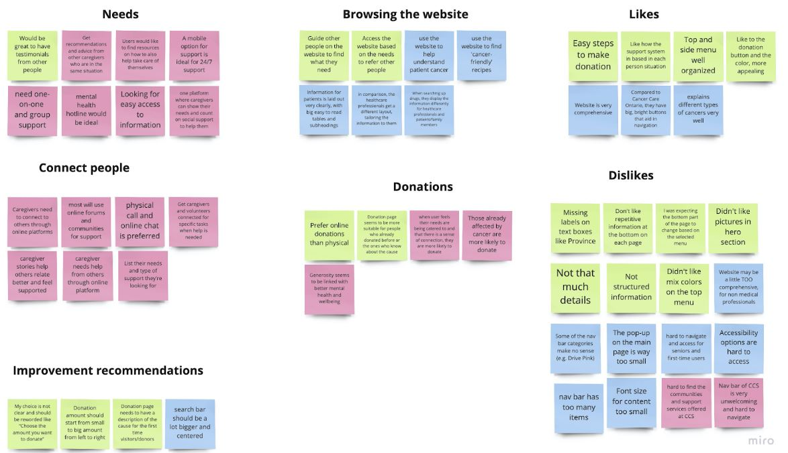

- About
- Skills
- Industrial Design
- UX/UI
- Contact
Goals and Needs
- Be able to find resources to support their friends and family
- To be able to find a community of individuals for emotional support
- Locate accurate and up-to-date information regarding treatments and support quickly.
Pain Points
- Users find it difficult to connect to people for support
- Users find it complicated to get in touch with the organisation


I Like...
- Easy Steps to make a donation
- Top and side menus of website
- Website educates users of different cancers
- Donation buttons are large and appealing

I Wish...
- Website looks organised
- I have 24/hr support
- There is a mobile app to use
- The Navbar was less cluttered

What If...
- People are connected to Pen Pals for support
- Caregivers had a social and emotional support platform
- There was an option to share your "cancer-friendly" recipe
- People could be subscribed to a magazine aimed for a better quality life
Once we gathered all our research , we :
- started to organise our findings and understand what is important
- started to paper wireframe while taking in consideration what our users like / dislike
The challenges we found:
- finding enough potential users for brainstorming with and talking to was limited
- Being able to get in contact with the organisation for further feedback was difficult
Main Features it needs to Include:
- Community Access for emotional support
- Ease of use
- Bright colours to provide positive experience
- Organised menu with less clutter
- Ability to navigate through the pages organically